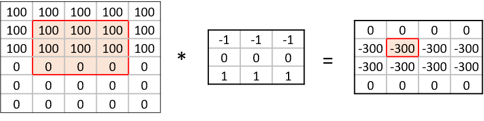

Image 1 of 1: ‘Three nested circles defining deep learning as a subset of machine learning which is a subset of artifical intelligence’
The image above is by Tukijaaliwa, CC BY-SA 4.0,
via Wikimedia Commons, original
source
Figure 2
Image 1 of 1: ‘Four types of image classification tasks include semantic segmentation to label every pixel; classification and localisation to detect a single object like a cat; object detection to detect multiple objects like cats and dogs; and instance segmentation to detect each pixel of multiple objects’
Figure 3
Image 1 of 1: ‘Subset of 25 CIFAR-10 images representing different object classes’
Image 1 of 1: ‘diagram of a single neuron taking multiple inputs and their associated weights in and then applying an activation function to predict a single output’
Figure 2
Image 1 of 1: ‘diagram of a neural with four neurons taking multiple inputs and their weights and predicting multiple outputs’
Image 1 of 1: ‘6x5 input matrix representing a single colour channel image being multipled by a 3x3 kernel to produce a 4x4 output matrix to detect horizonal edges in an image ’

Figure 4
Image 1 of 1: ‘single colour channel image of a cat multiplied by a 3x3 kernel to produce an image of a cat where the edges stand out’
Figure 5
Image 1 of 1: ‘diagram of a neural network with multiple inputs feeding into to two seperate dense layers with connections between all the inputs and outputs’
Image 1 of 1: ‘Plot of loss over weight value illustrating how a small learning rate takes a long time to reach the optimal solution.’
Small learning rate leads to inefficient
approach to loss minima
Figure 2
Image 1 of 1: ‘Plot of loss over weight value illustrating how a large learning rate never approaches the optimal solution because it bounces between the sides.’
A large learning rate results in overshooting
the gradient descent minima
Figure 3
Image 1 of 1: ‘Plot of loss over weight value illustrating how a good learning rate gets to optimal solution gradually.’
An optimal learning rate supports a gradual
approach to the minima
Figure 4
Image 1 of 1: ‘two panel figure; the figure on the left illustrates the training loss starting at 1.5 and decreasing to 0.7 and the validation loss decreasing from 1.3 to 1.0 before leveling out; the figure on the right illustrates the training accuracy increasing from 0.45 to 0.75 and the validation accuracy increasing from 0.53 to 0.65 before leveling off’
Figure 5
Image 1 of 1: ‘diagram of two neural networks; the first network is densely connected without dropout and the second network has some of the neurons dropped out of of the network’
Figure 6
Image 1 of 1: ‘two panel figure; the figure on the left illustrates the training loss starting at 1.7 and decreasing to 1.0 and the validation loss decreasing from 1.4 to 0.9 before leveling out; the figure on the right illustrates the training accuracy increasing from 0.40 to 0.65 and the validation accuracy increasing from 0.5 to 0.67’
Image 1 of 1: ‘for ten classes an example confusion matrix has 10 rows and 10 columns where the value in each cell is the number of observations predicted in that class and known to be in that class. The diagonal cells are where the true and predicted classes match.’
Figure 2
Image 1 of 1: ‘Confusion matrix of model predictions where the colour scale goes from black to light to represent values from 0 to the total number of test observations in our test set of 1000. The diagonal has much lighter colours, indicating our model is predicting well, but a few non-diagonal cells also have a lighter colour to indicate where the model is making a large number of prediction errors.’
Figure 3
Image 1 of 1: ‘test loss plotted against five dropout rates ranging from 0.15 to 0.75 where the minimum test loss appears to occur between 0.4 and 0.5’
Figure 4
Image 1 of 1: ‘Validation accuracy plotted against ten epochs for five different activations functions. relu and Leaky relu have the highest accuracy atound 0.60; sigmoid and selu are next with accuracy around 0.45 and tanh has the lowest accuracy of 0.35’

{kind=link}


{kind=link}